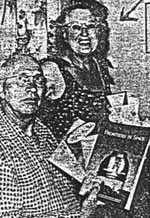
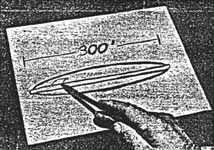
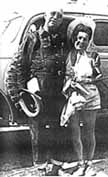

Bethurum naît le à Gavilin (Californie, Etats-Unis).
En dans le désert du Nevada, alors qu'il entretient une route nationale, Bethurum rencontre 5
extraterrestres, arrivé dans un très grand vaisseau spatial. Ils ont la peau au teint olive, font près de 5 pieds de
haut, et portent des uniformes. Ils parlent un anglais parfait et ont une apparence suffisamment humaine pour se
déplacer sur Terre à leur guise, ce qu'ils firent de temps en
temps. L'appareil est commandé par une femme capitaine nommée Aura Rhanes. Il la décrira en différents termes,
toujours très élogieux, tels que Reine des femmes et Tops in shapeliness et beauté.
Quelques temps après la rencontre initiale, Bethurum voit Aura Rhanes boire une verre de jus d'orange à un restaurant
et admet franchement qu'elle l'ignora.
Les extraterrestres décrits par Bethurum viendraient de la planète Clarion, supposément éradiquée de toutes maladies,
guerres et autres périls. Clarion fut décrite comme assez proche de la Terre, mais constamment cachée derrière la Lune.
Le :
Témoin oculaire : Un redondoien dit avoir visité un vaisseau spatial
Par JOHN MOON
Il existe un homme à Redondo Beach disant avoir été à bord d'une soucoupe volante 11 fois. Ce n'est pas tout, il
prévoit de prendre un vol dedans pour une planète éloignée la prochaine fois qu'il voit la demoiselle capitaine et
prend des arrangements. Ce voyage, une fois arrangé, emenèra Truman Bethurum (55 ans), de 519 N. Gertruda
Avenue, Redondo Beach, sur la planète Clarion. Aura Rahnes, la capitaine de la soucoupe volante dont il fit la
connaissance l'année dernière, a promis à Bethurum un vol spatial jusqu'à la lointaine planète.
Melle Rahnes, qui dit avoir 2 petits-enfants de retour sur la planète Clarion, dit à Bethurum que le voyage à
travers l'espace prendrait "environ 2 nuits", ou en d'autres mots, environ 48 h. Bethurum dit avoir fait la
connaissance de la femme capitaine de la soucoupe volante en Juillet , alors qu'il
travaillait sur la construction d'une route près de Mormon Mesa. Mormon Mesa est située près de la Nationale 91 dans
le Nevada à environ 70 miles de Las Vegas. Mais pour tous les détails de l'expérience de Bethurum sur la soucoupe
volante nous commencerons du début.
La propre histoire de Bethurum
11 visites dans une soucoupe volante - sont proclamées par Truman Bethurum, (ci-dessus) 519 N. Gertruda
Avenue, Redondo Beach. Bethurum (55 ans), présenté avec sa femme, Mary, parla à un journaliste du Daily Breeze de 11 visites à bord d'une soucoupe volante qu'il contacta
en dans le désert du Nevada. Depuis lors il a été bombardé par tous types de fiction et
littérature scientifique sur l'espace Daily Breeze

Ici, alors, est l'histoire de Bethrurum telle que racontée à un journaliste du Daily Breeze. Avant qu'il
commence l'histoire, cependant, Bethurum assura le journaliste qu'il n'était "pas un homme qui buvait" et qu'il
"n'avait jamais été dans un costume serré ou confiné dans quelque institution".
En Juillet Bethurum commen ça à travailler pour E. E. "Whitey" Edwards, un vieil ami,
qui dirigeait la construction d'une route par la Wells Cargo Construction Co. près le jonction de Glendale (Nevada).
Le travail était bien entâmé, se souvient Bethurum, et il fut transferré à une position de mécanicien de nuit sur
les camions à eau.
Une nuit, le Samedi 26 ou le Dimanche 27 Juillet, Bethurum avait terminé son travail et décida de visiter le sommet
d'une colline voisine parce qu'il avait entendu que l'océan l'avais recouvert une fois et y avait déposé des
coquillages. Il était environ 3 h 30 lorsqu'il gara son camion et utilisa une lampe-torche pour chercher des
coquillages. Il chercha pendant 1 h environ sans succès, et retourna donc à son camion pour dormir un moment.
Soudain il fut réveillé par un "murmure autour du camion." Le murmure était inintelligible. Bethurum regarda dehors
par la fenêtre et vit "8 à 10 petits hommes, d'environ 4 pieds 8 pouces à 5 pieds de haut." Ce n'était pas des nains
mais des hommes pleinements développés, dit Bethurum.
'You Name It'
Les petits hommes ne firent aucun effort pour le molester. Bethurum dit qu'il eut peur de tenter une fuite. Il
était toujours dans la cabine du camion. 1 homme lui parla dans une langue étrangère. Bethurum secoua la tête,
indiquant qu'il ne comprenait pas.
Le petit homme dit alors : "You name it." C'était un anglais parfais, se souvient Bethurum, qui répondit :
"Mon Dieu, vous pouvez aussi parler anglais ?" "Nous n'avons aucun problème avec votre langue," répondit
l'homme.
Bethurum descendit alors du camion et s'arrêta, stupéfait. Il fit une soucoupe volante garée à 75 yards environ de
son camion. Elle avait l'apparence d'acier poli inoxidable. Bethurum dit que son coeur battait si fort que "Je
pensais que j'allais mourir."
Cependant, il serra les mains de tous les hommes "amicaux" et demanda si leur capitaine était dans les environs. Le
porte-parole du groupe se porta volontaire pour escorter Bethurum au capitaine, et l'amena vers le vaisseau spatial
garé.
Dans le même temps, Bethurum regarda alentour et vit que les petits hommes était de "type Latin," c'est-à-dire,
avec des teints "comme des Italiens." Tous étaient soigneusement habillés d'uniformes semblables à ceux "portés par
les conducteur de bus Greyhound." Tous avaient des cheveux noir charbon et des yeux foncés. Ils avaient une belle
peau - une peau qui ne contenait aucune ride ou défauts.
Le vaisseau spatial
Dessin du vaisseau spatial - Montre les dimensions de la soucoupe volante de la planète Clarion, qui
aurait été vue par Bethurum l'année dernière. Il dit que le "scow" semblait être fait d'acier inoxidable bunished.
Elle mesurait 300 pieds de diamètre et faisait 18 pieds d'épaisseur au centre. Elle contenait un équipage de 32
hommes et une femme capitaine. Le croquis montre une épaisseur exagérée [Daily Breeze]

Le porte-parole pour le groupe tenait le coude droit de Bethurum. Alors qu'il tenait le bras gentiment, dit
Bethurum, l'homme semblait m'avoir complètement en son pouvoir. Il donna l'impression d'une grande force.
Bientôt le groupe arriva au vaisseau spatial. Bethurum le décrivit comme fait d'un certain type de métal. Il
apparait qu'il mesurait 300 pieds de diamètre et avait 6 yards de profondeur au centre. Un anneau métallique
de 3 pieds avec des bords biseautés entourait le vaisseau en forme de soucoupe. L'anneau, dit Bethurum, faisait près
de 2 pieds d'épaisseur. Le vaisseau n'avait aucun gouvernail ou [stacks].
Ils entrèrent dans le vaisseau par une large porte que Bethurum estima faire 4 pieds 1/2 de large et 10 à 12 pieds
de long. Elle était située sur le vaisseau près de l'anneau de métal autour du bord. A l'intérieur, il rencontra une
femme capitaine, Aura Rahnes. Il la décrivit comme ayant un visage "mince" de type Latin. Elle portait une jupe
rouge radiante, chemisier court-gainé de velours noir et un bérêt noir avec un [trim] rouge.
Il entra dans son salon et discuta. La femme capitaine dit qu'elle venait de la planète Clarion, qui ne pouvait
être vue depuis la Terre même avec un grossissement progressif, que Bethurum interpréta comme désignant un
télescope. Elle dit également que la planète n'était pas connue par le peuple de la Terre par un autre nom - tel que
Mars. Sur Mars : Elle dit qu'elle était peuplée et contenait une
atmosphère, une industrie et des foyers. Elle dit que le peuple sur Mars n'avait pas besoin de quelque appareillage spécial de
respiration.
À ce moment Bethurum prit conscience que les Clarionites de la soucoupe volante n'avaient pas besoin de dispositif
de respiration.
Appelez-les "Scows"
Le femme capitaine, dit Bethurum, expliqua qu'il était seulement re- (suite Page 2, colonne 3)...
Bethurum et sa femme Mary à la convention de Giant Rock

En , Bethurum publie son 1er livre. Il se rend à la convention de Giant Rock, et donne diverses
interviews dans la presse et à la radio :
Le livre de Bethurum sorti des presses ; Les soucoupes ouvrent une toute nouvelle carrière
Truman Bethrurum de Redondo Beach, qui a acqui une renommée nationale à travers une histoire publiée dans le Daily
Breeze relatant son histoire de la visite d'une soucoupe volante par 11 fois, est maintenant si occupé à honorer ses
interviews qu'il a été forcé d'abandonner une carrière à plein temps d'ouvrier en bâtiment.
Le livre de Bethurum, parlant de ses aventures, est aujourd'hui sorti des presses et vendu dans les branches des
magasins J. W. Robinson & Co.. Ou, ceux désirant une copie pourraient entrer en contact avec DeVorss Publishing Co.,
516 W. Ninth St., Los Angeles 15, et un livre serait expédié - prix total 3,15 $.
Dans le même temps, Bethurum continue à être demandé par le public. Par 2 fois il est apparu sur le show télévisé
de Betty White sur Channel 4 pour bénéficier d'une diffusion d'une côte à l'autre.
He will speak Friday night at the Angeles Temple in Los Angeles between 7:30 and 8 o'clock during the regular
evening services. On Sunday, April 18 at 3:30 p.m., he is slated for an interview on the Cavalcade of Books program
on TV Channel 2. At that time his book will be discussed.
Bethurum, the South Bay's only saucer sighting enthusiast of renown, will be called to a convention of flying
saucer followers at Giant Rock in the 29 Palms area on Saturday and Sunday, April 3 and 4. He explains that a crowd
of 5000 is anticipated in the desert community, and those attending have been warned to take along their own water
and food.
Many will "fly in" to the area and make use of the landing strip near the convention site, said Bethrurum.
Bethurum said he is continuing to receive a flood of telephone calls and visits.
After the appearance he put in on the platter Panel TV Show, said Bethurum, an Air Force official visited his home.
The official, according to Bethurum, explained he had received more than 200 telephone calls from pilots saying they
had seen exactly the same type flying saucers as described by Bethurum Redondo Beach Daily
Breeze, 1er avril 1954.
Il décède le à Landers (Californie).
Auteur de :
A bord d'une soucoupe volante (1954)
La voix de la planète Clarion (1957)
Face à la réalité (1958)
Le peuple de la planète Clarion (1970)
Références :
Truman Bethurum's Personal Scrapbook (Arcturus Book Service, 1982)